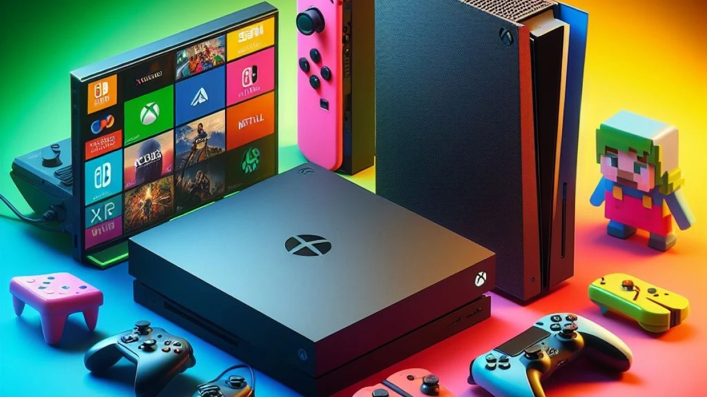

CONSOLAS
Consolas para Juegos de Luigi
Consolas de Nintendo
- Nintendo Entertainment System (NES):
- Super Mario Bros. (1985)
- Super Mario Bros.: The Lost Levels (1986)
- Super Nintendo Entertainment System (SNES):
- Super Mario World (1990)
- Nintendo 64 (N64):
- Super Mario 64 (1996)
- Mario Kart 64 (1996)
- Nintendo GameCube:
- Super Mario Sunshine (2002)
- Luigi's Mansion (2001)
- Mario Kart: Double Dash!! (2003)
- Nintendo DS:
- Mario Kart DS (2005)
- Mario & Luigi: Partners in Time (2005)
- Nintendo 3DS:
- Luigi's Mansion: Dark Moon (2013)
- Mario Kart 7 (2011)
- Mario & Luigi: Dream Team (2013)
- Nintendo Wii:
- Mario Kart Wii (2008)
- Super Mario Galaxy (2007)
- Super Mario Galaxy 2 (2010)
- Nintendo Wii U:
- Super Mario 3D World (2013)
- Mario Kart 8 (2014)
- Luigi's Mansion Arcade (2015)
- Nintendo Switch:
- Super Mario Odyssey (2017)
- Luigi's Mansion 3 (2019)
- Mario Kart 8 Deluxe (2017)
Consolas de Arcade
- Luigi’s Mansion Arcade (2015): Una versión de arcade de Luigi’s Mansion diseñada para jugarse en máquinas recreativas.
Consolas Portátiles
- Game Boy Color:
- Dr. Mario (2001)
- Game Boy Advance:
- Mario Kart: Super Circuit (2001)
- Mario & Luigi: Superstar Saga (2005)
- Nintendo 3DS:
- Mario & Luigi: Bowser's Inside Story + Bowser Jr.'s Journey (2019)
Consolas Virtuales y Retro
- Nintendo Virtual Console:
- Super Mario Bros. (NES)
- Super Mario Bros.: The Lost Levels (NES)
- Super Mario World (SNES)
- Mario Kart 64 (N64)